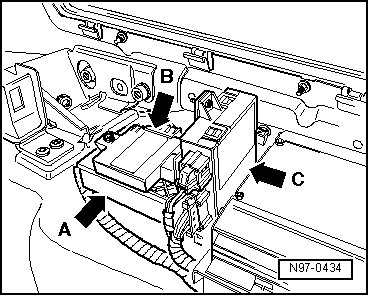

Body Control Module: Description and Operation
Comfort System Central Control Module
Comfort System Central Control Module (J393) - arrow A - is located in luggage compartment, at right on wheel housing.

• Additional information:
297The Touareg
298The Touareg Electrical System
General Description:
Comfort System Central Control Module (J393) performs the following tasks in the vehicle:
• Sunroof control (issues enabling)
• Window regulator control (issues enabling)
• Central locking system control
• Anti-theft warning system control
• Radio receiver
• Rear lid closing
• Comfort operation
Some of the functions listed above can be adapted --> [ Comfort System Central Control Module, Adapting ] Comfort System Central Control Module, Adapting.
• After installing a new Comfort System Central Control Module (J393), it must be coded --> [ Comfort System Central Control Module, Coding ] Comfort System Central Control Module, Coding.
• After anti-theft alarm system has triggered, the alarm source, which is stored in Comfort System Central Control Module (J393), can be checked --> [ Comfort System Central Control Module, Checking Anti-Theft Alarm System
Alarm Sources ] Initial Inspection and Diagnostic Overview.
DTC recognition and display:
Comfort System Central Control Module (J393) is equipped with On Board Diagnostics (OBD) which assists troubleshooting.
For troubleshooting, use Vehicle Diagnostic, Testing and Information System (VAS 5051A) in operating mode " Guided Fault Finding".